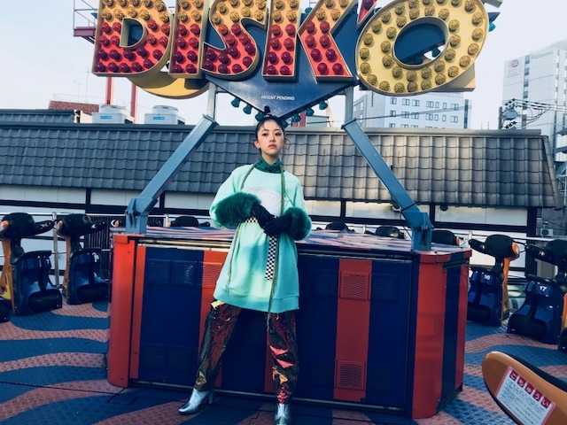
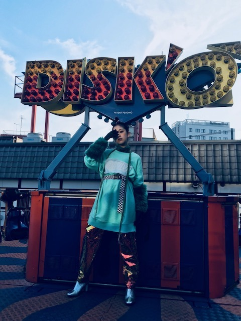
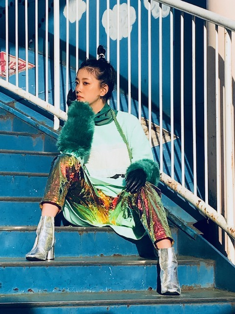
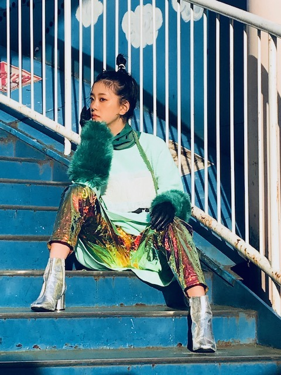

2018/1225Tueメロウ
あと、今日は、
OVERTURE発売日です！


フルーツに掛けた撮影でして
バナナの黄
チェリーの赤
メロンの緑などなど。
とてもクールでポップな仕上がりとなっています！！！
街をぶらぶら遊園地をゆらゆら
初挑戦のヘアメイクにスタイリングで
ドキドキでわくわくな撮影でした
凄く楽しくて刺激的だったな〜☺︎
普段の私とはまた違った私を見ていただけると思います
くぼちゃん琴子も載っていて、かっこかわいいので、是非是非。




みてくださいっ。
花やしきで乗った回りながら揺れる
アトラクション
楽しかったな〜
発売中
ar
「遊・悠・WesT」九州版2018冬号(表紙)
月刊TVガイド
EX大衆
週刊東京ウォーカー+
東海ウォーカー(表紙)
ブルーレイディスクナビゲートbook(無料配布中)
そして12/30 23:15〜テレビ東京
ジャパニーズinプリズン〜世界の獄中ニッポン人に会ってみた！〜
に出させていただきます
びっくりの連続でした！！
よろしくお願いします〜
あ〜メロン食べたくなってきた
では！
2018/12/25 17:12
コメント(282)
カラフルだね～。時期にぴったり～＾＾
メロンといえば夕張メロン！by道産子TOM
めっちゃかっこいい…スキ
巻いたハーフツインとかしてくれますか？
みおなちゃんいつ見ても本当に可愛いです〜〜
巻いたハーフツインとかしてくれますか？
みおなちゃんいつ見ても本当に可愛いです〜〜
美しい
めっちゃカッコイイですね、違う人みたい、さすがカメレオンアイドル七変化ですね、大阪の握手会行きました。まじかで見る堀さんは、凄いオーラで、女神様でした。堀さんの、ものすごい才能は、一言では言い表せないので、12枚握手券を用意して、一回ずつ回って、堀さんの凄い才能を伝える計画でしたが、終了時間が思ったより早く、結局まとめだしでは、上手く喋れませんでした。少し悔みましたが、堀さんと握手した人達の表情は、みんな幸せそうで、楽しそうでした。あらためて、堀さんは、みんなの心に、あまねく灯りを照らす天照女神様だと確信しました。ありがとうございました。感謝してます。
未央奈ちゃんどれもカッコイイし、
素敵なお洋服だね( •ᴗ• )！
素材も独特そうだね( * ॑꒳ ॑* )
色々な未央奈が見れてすごく幸せ。
まだ見れてない雑誌あるから
明日買ってくるね( ˶˙ᵕ˙˶ )！
素敵なお洋服だね( •ᴗ• )！
素材も独特そうだね( * ॑꒳ ॑* )
色々な未央奈が見れてすごく幸せ。
まだ見れてない雑誌あるから
明日買ってくるね( ˶˙ᵕ˙˶ )！
モード？な感じですね～
コメント失礼します！
かっこ可愛いですね（＾ν＾）コタツに入ってみかんが食べたいです笑
ブログ更新が多くて嬉しいです＾＾
ありがとうございます
かっこ可愛いですね（＾ν＾）コタツに入ってみかんが食べたいです笑
ブログ更新が多くて嬉しいです＾＾
ありがとうございます
世界観というかファッションセンスが好きだしそれを着こなす未央奈ちゃん好き。カッコよ…(°_°)♡
クリスマスに二回も更新してくれるなんて、未央奈はやっぱり最高だな！未央奈のおでこがとにかく可愛すぎるです。
箸君継承したね。
卒業セレモニーでは、若が箸をステージに置いていったから、どうなるかと思ったけど、未央奈とは！
たまちゃんか未央奈かなとは観ててドキドキしたけど、まさか！
ずっと応援してるからね！
卒業セレモニーでは、若が箸をステージに置いていったから、どうなるかと思ったけど、未央奈とは！
たまちゃんか未央奈かなとは観ててドキドキしたけど、まさか！
ずっと応援してるからね！
ほりっぴ～、ナンチです♪
連続ありがとう～
サンタのは全然違う大人なほりっぴ～
いろいろな表情がほりっぴ～の魅力だね
女優ほりっぴ～に期待しちゃいます
連続ありがとう～
サンタのは全然違う大人なほりっぴ～
いろいろな表情がほりっぴ～の魅力だね
女優ほりっぴ～に期待しちゃいます
やっぱりこういうカッコよさを出せるのも強みだよね。
記事も読んだよ。
これからの方向性が明確になっていく感じ？
記事も読んだよ。
これからの方向性が明確になっていく感じ？
もう一つこちらから書いておくね！さっきのブログコメントには書き忘れたので。笑
未央奈！(*´꒳`*)
Merry Christmas！！
未央奈！(*´꒳`*)
Merry Christmas！！
未央奈～こんばんは！
ぽてとです！
写真めちゃくちゃカッコいい！！
是非チェックするね！
ぽてとです！
写真めちゃくちゃカッコいい！！
是非チェックするね！
めちゃめちゃかわいい
めりくりございますm(_ _)m
未央奈様初めまして。
こちらに書き込みさせて貰うのは、初めての1ファンのクリスタルと申します。
もう昨日になりますが、秋元さんと一緒にクックパッドTVに出られてましたね。
私も見ていまして、コメントを投稿したら、本当に運よく未央奈さんに読んで貰いました。(#^.^#)
これはのぎおびの投稿でメンバーに読んで貰う確率より、かなり低い確率だと思います。
ファンとして嬉しかったものですから、お邪魔して書き込みをさせて貰いました。
未央奈さん始めメンバーの皆は、年末までほとんど休む事なくお仕事ですから、体調には気をつけて頑張って下さい。
(^^)
こちらに書き込みさせて貰うのは、初めての1ファンのクリスタルと申します。
もう昨日になりますが、秋元さんと一緒にクックパッドTVに出られてましたね。
私も見ていまして、コメントを投稿したら、本当に運よく未央奈さんに読んで貰いました。(#^.^#)
これはのぎおびの投稿でメンバーに読んで貰う確率より、かなり低い確率だと思います。
ファンとして嬉しかったものですから、お邪魔して書き込みをさせて貰いました。
未央奈さん始めメンバーの皆は、年末までほとんど休む事なくお仕事ですから、体調には気をつけて頑張って下さい。
(^^)
未央奈～ こんにちは メリークリスマス。
一日に２つものブログの更新ありがとうございます。
まとめて、コメントさせていただきます。
それにしてもサンタコスプレ、とにかく「かわいい」の一言です。
CDTV生出演、おつかれさまでした。髪も似合ってましたよ。
発売になった「OVERTURE」読みましたよ。花やしき、浅草ですよね。
それに、CD屋さんで見る「ブルーレイディスクナビゲート」毎日一冊ずつ、もらってきています。
明日のレコメンも楽しみにしていますよ。
東海ウォーカーの表紙&記事、こちらもまだ別の「かわいい」がありますね。
「私の働き方」も見ましたよ。
明日から一気にまた寒くなるそうです。くれぐれも体調管理には気をつけてくださいね。
一日に２つものブログの更新ありがとうございます。
まとめて、コメントさせていただきます。
それにしてもサンタコスプレ、とにかく「かわいい」の一言です。
CDTV生出演、おつかれさまでした。髪も似合ってましたよ。
発売になった「OVERTURE」読みましたよ。花やしき、浅草ですよね。
それに、CD屋さんで見る「ブルーレイディスクナビゲート」毎日一冊ずつ、もらってきています。
明日のレコメンも楽しみにしていますよ。
東海ウォーカーの表紙&記事、こちらもまだ別の「かわいい」がありますね。
「私の働き方」も見ましたよ。
明日から一気にまた寒くなるそうです。くれぐれも体調管理には気をつけてくださいね。
今日は2回もブログの更新ありがとう。
OVER TUREはまだチェックできていないんだよ。
明日の仕事帰りにでも本屋に寄ってゲットしてくるね。
ゴロ～
OVER TUREはまだチェックできていないんだよ。
明日の仕事帰りにでも本屋に寄ってゲットしてくるね。
ゴロ～
箸くん未央奈ー
マスクメロン僕も好き
マスクメロン僕も好き
普段あまり見ない感じも良き(*^^*)
未央奈おしゃれだね2回も更新ありがとう！
写真になると未央奈ちゃんの表情がメッセージ性を帯びて印象的！
最後にフォントが小さく統合されているのはわざと？それともご愛嬌？そこも未央奈ちゃんらしさ
最後にフォントが小さく統合されているのはわざと？それともご愛嬌？そこも未央奈ちゃんらしさ
さすがモデルさんですね。淡い色ではなくて、原色のしっかりしたものでもちゃんと似合ってますね(^_^)
確かに、寒い日でもメロンは食べたくなりますね(^_^)
確かに、寒い日でもメロンは食べたくなりますね(^_^)
未央奈～☆☆
クリスマスの日に、未央奈のブログが２つも見れるなんて、
めっちゃ嬉しい！
これは未央奈サンタのおかげかな。笑
普段と違った未央奈を見るのも楽しいなー
年末にかけて、雑誌でもテレビでも
未央奈をたくさん見れるから、
今年はまだまだ幸せな時間が続きそうだよ！
あ～バナナが食べたくなってきた。笑
クリスマスの日に、未央奈のブログが２つも見れるなんて、
めっちゃ嬉しい！
これは未央奈サンタのおかげかな。笑
普段と違った未央奈を見るのも楽しいなー
年末にかけて、雑誌でもテレビでも
未央奈をたくさん見れるから、
今年はまだまだ幸せな時間が続きそうだよ！
あ～バナナが食べたくなってきた。笑
堀さん、こんばんは。沢山ブログ更新してくれて嬉しいです。
サンタの衣装は似合いすぎの可愛すぎです。犬は飼い主に似るとは言いますが顔も色白な所も服を着てる所も似てますね。それだけじゃなく可愛い格好で見る人を喜ばせたい所も似てきてるのかもしれませんね。
あと、さっき「海がきこえる」を何年かぶりに見たんですけど、凄く良かったです。何年かしたら、あの頃の見えてた世界の狭さも愛おしくなるって所が、ちょうど今の僕に刺さって、下らないことで落ち込んでたのが少しだけマシになりました。本当に助かりました。
にしてもジブリは仕草がいちいち生きてて感心しますね。登場人物たちが中々目が合わないのも良かったです。
最近僕が見た「くまのア－ネストおじさんとセレスティ－ヌ」ってフランスのアニメ映画が、作った人絶対ジブリ大好きだろうなって思わされる生きたアニメだったので、まだ見てなかったらお勧めです。netflixとかで見れます。
年明けまで忙しいと思うので、身体休めつつ頑張ってくださいね。応援してます。
サンタの衣装は似合いすぎの可愛すぎです。犬は飼い主に似るとは言いますが顔も色白な所も服を着てる所も似てますね。それだけじゃなく可愛い格好で見る人を喜ばせたい所も似てきてるのかもしれませんね。
あと、さっき「海がきこえる」を何年かぶりに見たんですけど、凄く良かったです。何年かしたら、あの頃の見えてた世界の狭さも愛おしくなるって所が、ちょうど今の僕に刺さって、下らないことで落ち込んでたのが少しだけマシになりました。本当に助かりました。
にしてもジブリは仕草がいちいち生きてて感心しますね。登場人物たちが中々目が合わないのも良かったです。
最近僕が見た「くまのア－ネストおじさんとセレスティ－ヌ」ってフランスのアニメ映画が、作った人絶対ジブリ大好きだろうなって思わされる生きたアニメだったので、まだ見てなかったらお勧めです。netflixとかで見れます。
年明けまで忙しいと思うので、身体休めつつ頑張ってくださいね。応援してます。
お！またお会いしましたね。
今日はクリスマスの奇跡で2つもブログを更新してくれたんだねっ！
ありがたや〜☺︎
メロウ。OVERTURE
未央奈が新しいかんじって言うだけあって、見たことがない新しい未央奈を見れるみたいだね！
大きくDISK'O！って書いてあってすごいオーラを醸し出してる未央奈が映っとる。。
バナナにチェリーにメロン！
すごいなぁ。
未央奈の表情にも注目だね！！
街をぶらぶら遊園地をゆらゆら
みるねっ！
回りながら揺れるアトラクション。
楽しい撮影が伝わってきそう！(๑˃̵ᴗ˂̵)♪
おぉー！いっぱい載ってるね！
さすが未央奈♪
ちょ、急に文字が小さくなって遠慮がちに。笑
驚いた未央奈の表情でもチェックしよかな。
みます〜〜
メロンおいしいよね♪
握手会でも思ったけど未央奈の目ってめっちゃキラキラしててきれいだよ！
これからもいっぱい笑って輝いていてね〜！✨
それでは！また次回も会いましょう！
じゃんけん、ぽい！
ハイタッチ〜〜！笑
今日はクリスマスの奇跡で2つもブログを更新してくれたんだねっ！
ありがたや〜☺︎
メロウ。OVERTURE
未央奈が新しいかんじって言うだけあって、見たことがない新しい未央奈を見れるみたいだね！
大きくDISK'O！って書いてあってすごいオーラを醸し出してる未央奈が映っとる。。
バナナにチェリーにメロン！
すごいなぁ。
未央奈の表情にも注目だね！！
街をぶらぶら遊園地をゆらゆら
みるねっ！
回りながら揺れるアトラクション。
楽しい撮影が伝わってきそう！(๑˃̵ᴗ˂̵)♪
おぉー！いっぱい載ってるね！
さすが未央奈♪
ちょ、急に文字が小さくなって遠慮がちに。笑
驚いた未央奈の表情でもチェックしよかな。
みます〜〜
メロンおいしいよね♪
握手会でも思ったけど未央奈の目ってめっちゃキラキラしててきれいだよ！
これからもいっぱい笑って輝いていてね〜！✨
それでは！また次回も会いましょう！
じゃんけん、ぽい！
ハイタッチ〜〜！笑
どーも。愛媛の野球バカです。
色んなみおながこのブログで見れて最高！！
かっこかわいい
後、、2代目箸くんおめでとう 笑
いきなりの強烈な変顔ありがとう 笑
テレビでとても笑わせてもらいました！
これからも活躍期待してます！！
色んなみおながこのブログで見れて最高！！
かっこかわいい
後、、2代目箸くんおめでとう 笑
いきなりの強烈な変顔ありがとう 笑
テレビでとても笑わせてもらいました！
これからも活躍期待してます！！
未央奈2回も更新ありがとう。見るね。
堀さん、おはようございます。
『OVERTURE』さん発売嬉しいな。いろいろな果物のイメージカラーに身を包んだ堀さんがおしゃれ〜。
フルーツはビタミンCたっぷりで人を癒やし元気にしてくれる存在。まるで乃木坂46みたい（ふふ）。
ではまたコメントします。今日も一日がんばりましょう。
さらばだ、また会おう！（気球に乗って去りぬ〜）
『OVERTURE』さん発売嬉しいな。いろいろな果物のイメージカラーに身を包んだ堀さんがおしゃれ〜。
フルーツはビタミンCたっぷりで人を癒やし元気にしてくれる存在。まるで乃木坂46みたい（ふふ）。
ではまたコメントします。今日も一日がんばりましょう。
さらばだ、また会おう！（気球に乗って去りぬ〜）
未ー央ー奈ー！(^_-)
レコメン楽しみにやー♪＼(^o^)／
レコメン楽しみにやー♪＼(^o^)／
堀さん、おはようございます♪
オーバーチュアを調べました。
ファッション雑誌のようですね。
女子生徒が制服にズボンを選択できる
高校もあるようです。
新聞に書いてありました。
遊園地に行ったのですね。
僕も子供のころに１００円を入れて動く
動物の乗り物に乗りました。
デパートの屋上に小さい遊園地がありました。
カウントダウンＴＶを見ました。
乃木坂の曲のテンポが速かったです。
僕は関西に住んでるので 週刊東京ウォーカー
という雑誌は読めないのですが、
関西ウォーカー が図書館にあるので
関西ウォーカー に乃木坂が出ることがあれば
読みますね。
あ・・・昨日、図書館でａｒを探しましたが
ありませんでした。
ではまたコメントしますね☆
オーバーチュアを調べました。
ファッション雑誌のようですね。
女子生徒が制服にズボンを選択できる
高校もあるようです。
新聞に書いてありました。
遊園地に行ったのですね。
僕も子供のころに１００円を入れて動く
動物の乗り物に乗りました。
デパートの屋上に小さい遊園地がありました。
カウントダウンＴＶを見ました。
乃木坂の曲のテンポが速かったです。
僕は関西に住んでるので 週刊東京ウォーカー
という雑誌は読めないのですが、
関西ウォーカー が図書館にあるので
関西ウォーカー に乃木坂が出ることがあれば
読みますね。
あ・・・昨日、図書館でａｒを探しましたが
ありませんでした。
ではまたコメントしますね☆
未央奈ちゃん、おはよう。
昨日は２度のブログ更新ありがとう。未央奈サンタなどとっても癒されました。
テレビ番組など、しっかりチェックしますね。
未央奈ちゃんが沢山見られるから嬉しいです。
乃木坂46と頑張ってるcuteでsmartな未央奈ちゃんを応援しています。
昨日は２度のブログ更新ありがとう。未央奈サンタなどとっても癒されました。
テレビ番組など、しっかりチェックしますね。
未央奈ちゃんが沢山見られるから嬉しいです。
乃木坂46と頑張ってるcuteでsmartな未央奈ちゃんを応援しています。
未央ちゃん
ブログ更新ありがとう
艶やかな衣装
おしゃれなお仕事良かったね
年末もお仕事忙しいから
体調管理気をつけてね
メリークリスマス
ブログ更新ありがとう
艶やかな衣装
おしゃれなお仕事良かったね
年末もお仕事忙しいから
体調管理気をつけてね
メリークリスマス
未央奈ちゃん可愛すぎて憧れます♥中１です。
スタイルブックか、メイク本出してほしいです
スタイルブックか、メイク本出してほしいです
未央奈
カッコええで〜
カッコええで〜
未央奈 おはよう！
今年もサンタさんは、来なかったよー！
道に迷って迷い子になったゃたのかな？
Overture 今日届くので 楽しみです。
キラキラポップで、いつもと違う未央奈に出会えるか楽しみ！
今年もあとわずかだね、ラストスパートで頑張ろうね！
未央奈が頑張ってるから頑張れる！
いつも ありがとう！
未央奈は未央奈のままで、
最高の笑顔で！
今年もサンタさんは、来なかったよー！
道に迷って迷い子になったゃたのかな？
Overture 今日届くので 楽しみです。
キラキラポップで、いつもと違う未央奈に出会えるか楽しみ！
今年もあとわずかだね、ラストスパートで頑張ろうね！
未央奈が頑張ってるから頑張れる！
いつも ありがとう！
未央奈は未央奈のままで、
最高の笑顔で！
ブログ更新ありがとう！
未央奈ちゃん更新ありがとー！
クールな未央奈ちゃんも素敵です！！
早速本屋に行ってきまーす！
音楽番組全部チェックしてるよー。
素晴らしいパフォーマンスありがとう！
年末まだまだ忙しいと思うけど頑張ってね！！
ファイト未央奈！！
クールな未央奈ちゃんも素敵です！！
早速本屋に行ってきまーす！
音楽番組全部チェックしてるよー。
素晴らしいパフォーマンスありがとう！
年末まだまだ忙しいと思うけど頑張ってね！！
ファイト未央奈！！
わっ！めっちゃカッコいい
おはようございます‼︎
OVERTURE、いい感じですね‼︎
ちょっと前衛的な、最先端のファッションって感じ。
今までに見たことのない未央奈を見ることができて、なんか嬉しいです♪
今年もそろそろ終わりですが、2019年もいろいろな未央奈を見ることができそうですね‼︎
アイドルとしての未央奈、女優としての未央奈、モデルとしての未央奈。
そして、２代目箸くんとしての未央奈(笑)。
どれもこれも楽しみです‼︎
レコ大、紅白まで走り抜けて、その後はゆっくり休んで、また心機一転頑張りましょう♪
ではでは、また。
今日も未央奈にとっていい1日になりますように♪
OVERTURE、いい感じですね‼︎
ちょっと前衛的な、最先端のファッションって感じ。
今までに見たことのない未央奈を見ることができて、なんか嬉しいです♪
今年もそろそろ終わりですが、2019年もいろいろな未央奈を見ることができそうですね‼︎
アイドルとしての未央奈、女優としての未央奈、モデルとしての未央奈。
そして、２代目箸くんとしての未央奈(笑)。
どれもこれも楽しみです‼︎
レコ大、紅白まで走り抜けて、その後はゆっくり休んで、また心機一転頑張りましょう♪
ではでは、また。
今日も未央奈にとっていい1日になりますように♪
ゆる巻きロングヘア堀殿きゃわわうれぴーぽーo(￣◎￣)o ﾊﾞﾌﾞｩ♡
未央奈今年一年お疲れ様でした、来年よろしくお願いいたします。ブログ更新ありがとう❤
未央奈、今日も一日お疲れさまでした。
OVERTURE発売中ですね。
まだ見れてないので、時間を作って絶対見ます。
ごめんねm(_ _)m
12月はいろんな雑誌に未央奈が載っていて。
すごく嬉しいです。
僕が印象に残っているのはEX大衆の新内さん、伊藤かりんさんとの2期生のことを話している内容の記事がすごく良かったです。
2期生は今、個人としてやりたいことができているなかで、乃木坂46のグループ全体として活躍していくか。真剣に、ときには笑いがある内容で。
「ああ、今こういうことが必要で、自分たちの応援の仕方も改めて見直していかなきゃな」と、一歩立ち止まって考えることができました。
「頑張れ！」って言うのは簡単だけど、どうすればいいかは考えなきゃいけないし、一人で考えるなら、僕は手助けしていきたいし。
それに、もらってばかりで、恩返しもできないなんて良くないから。。。
自分ができることは限られているけれど、何か変えられるように。目に見える現実は変えられないことは多いけど、気持ちだけでも支えていけるように…。
これからもよろしくね。。
じゃあ、短めにここまで！
ではでは、ねこでした。
未央奈ちゃん、ひろっしーです！コメント投稿548回目です！
前回はブログ「甘酸っぱいものとは青春とみかんと金柑と」にブログの感想(ほとんどMステと755)を書きました！
時間→「No.286 2018年12月23日 23:00」
2回もブログ更新ありがとうございます！
書き始めたのは12月25日の夜でした！
※昨日→12月24日、今日→12月25日
ややこしくてスミマセン！
未央奈サンタ～、Happy Merry Christmas！
もう終わってしまいますが、今日はクリスマスでしたね(笑) 昨日はローストチキンとケーキを食べましたが、今日はいつも通りの日・・・と思っていたら、未央奈サンタさんからブログとモバメのプレゼント！当然ですが、その写真が可愛すぎる！昼休憩と帰り、特に昼休憩かな？未央奈サンタさんのあまりの可愛さに、嬉しい気持ちを抑えるのに必死でした(汗)
かなりんセレクト素晴らしかったです！
クッキー美味しいですよね！
・カントリーマアム
・チョコを挟んだラング･ド･シャ
・しるこサンド(クッキー？)今ハマってます！
特に好きなやつです！
ホットケーキ、ちゃんと焼いて食べてね(笑)
服着てるニコルも可愛いな～！
おっと、ここで12月26日になりました！
くそ～！あとちょっとやったのに～(悔)
※今日→12月26日
ややこしくてスミマセン！
「OVERTURE」のオフショット、第一印象は「これ未央奈サンタさんと一緒の人？」です！それぐらい表情がクールで衣装がポップだったので！こんなに変わるって凄いな～！
また他の雑誌と共にチェックさせて頂きます！年末まで大忙しですね！活躍されるのは嬉しいけど、無理はしちゃダメだよ！
それでは、今日は準夜勤なのでもう少ししたら行ってきます！「レコメン！」はゴメンね(謝)
ここまで読んで頂きありがとうございました！
毎日お仕事お疲れ様です！体調にはくれぐれも気を付けて頑張ってくださいね！
ではでは！
前回はブログ「甘酸っぱいものとは青春とみかんと金柑と」にブログの感想(ほとんどMステと755)を書きました！
時間→「No.286 2018年12月23日 23:00」
2回もブログ更新ありがとうございます！
書き始めたのは12月25日の夜でした！
※昨日→12月24日、今日→12月25日
ややこしくてスミマセン！
未央奈サンタ～、Happy Merry Christmas！
もう終わってしまいますが、今日はクリスマスでしたね(笑) 昨日はローストチキンとケーキを食べましたが、今日はいつも通りの日・・・と思っていたら、未央奈サンタさんからブログとモバメのプレゼント！当然ですが、その写真が可愛すぎる！昼休憩と帰り、特に昼休憩かな？未央奈サンタさんのあまりの可愛さに、嬉しい気持ちを抑えるのに必死でした(汗)
かなりんセレクト素晴らしかったです！
クッキー美味しいですよね！
・カントリーマアム
・チョコを挟んだラング･ド･シャ
・しるこサンド(クッキー？)今ハマってます！
特に好きなやつです！
ホットケーキ、ちゃんと焼いて食べてね(笑)
服着てるニコルも可愛いな～！
おっと、ここで12月26日になりました！
くそ～！あとちょっとやったのに～(悔)
※今日→12月26日
ややこしくてスミマセン！
「OVERTURE」のオフショット、第一印象は「これ未央奈サンタさんと一緒の人？」です！それぐらい表情がクールで衣装がポップだったので！こんなに変わるって凄いな～！
また他の雑誌と共にチェックさせて頂きます！年末まで大忙しですね！活躍されるのは嬉しいけど、無理はしちゃダメだよ！
それでは、今日は準夜勤なのでもう少ししたら行ってきます！「レコメン！」はゴメンね(謝)
ここまで読んで頂きありがとうございました！
毎日お仕事お疲れ様です！体調にはくれぐれも気を付けて頑張ってくださいね！
ではでは！
なんか、かっこいいすね！
かっこいい未央奈さんも好きです！
かっこいい未央奈さんも好きです！
パンクの香りが漂う素敵な衣装だね。
着こなすのはホントに難しいと思うけど、それを見事に着こなしている未央奈ってすごいね。
本当にカッコいいよ。
そしたら、またコメントするな。
誰かのために生きることは必ず幸せに繋がっている。
人は見えない所で繋がっているから。
未央奈のこと大好きだよヽ(・∀・)ノ
着こなすのはホントに難しいと思うけど、それを見事に着こなしている未央奈ってすごいね。
本当にカッコいいよ。
そしたら、またコメントするな。
誰かのために生きることは必ず幸せに繋がっている。
人は見えない所で繋がっているから。
未央奈のこと大好きだよヽ(・∀・)ノ
みてくださいっ。←かわいい
パンダマシン いっぺん乗ってみたいけど 恥ずかしくてとても乗れない。たまたま座ったら たまたま動いちゃった ていで乗ってみたい
パンダマシン いっぺん乗ってみたいけど 恥ずかしくてとても乗れない。たまたま座ったら たまたま動いちゃった ていで乗ってみたい


なんか大人っぽい未央奈さんですね
少しドキドキしちゃいました
早く映画見たいなぁ〜楽しみです
残り少ない2018年を楽しみましょう！